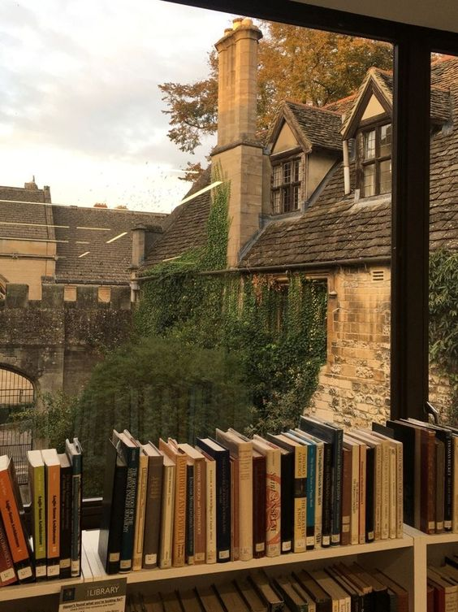
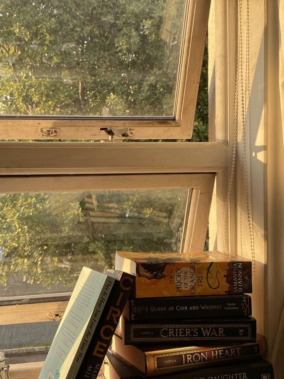

"Os livros são um tesouro que revela seus segredos apenas para aqueles que sabem como lê-los." - Elizabeth Hardwick

"Os livros são o avião, o trem e a estrada. Eles são o destino e o próprio lar." - Anna Quindlen
"A leitura é para a mente o que o exercício é para o corpo." - Joseph Addison